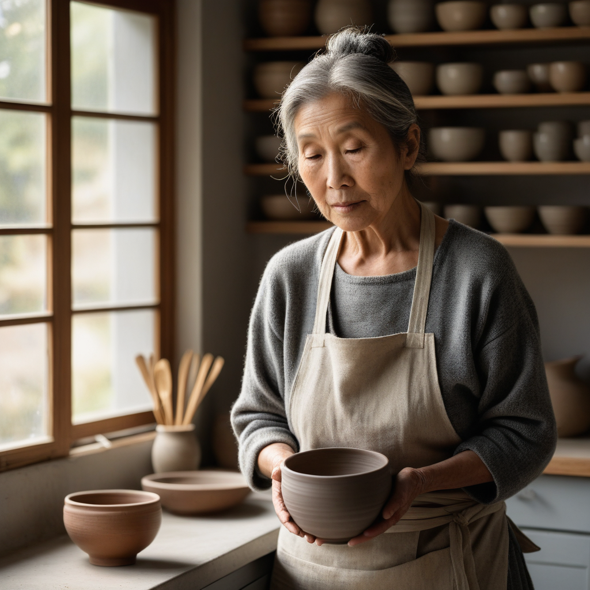
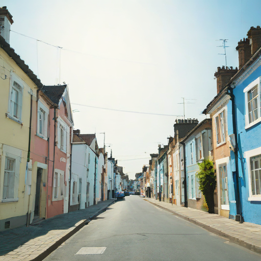
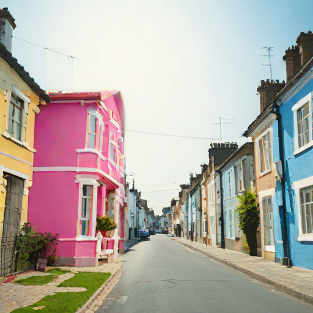

Image Generation
Create images from a text description — or edit a photo you attach — entirely on your own machine. No account, no cloud, no per-image cost. Just ask the assistant to draw, photograph, or change something and it appears in the chat.
info How it works
LexiChat bundles a small, offline image engine (stable-diffusion.cpp) and gives the AI a generate_image tool. When you ask for a picture, the model writes a detailed prompt, the engine renders it locally, and the result is shown inline in the chat — with a Save button.
Everything after your message happens on your computer. Nothing is uploaded.
image Example
This photorealistic image was generated locally from a single chat message, using the RealVisXL model at 1024×1024:

"Generate a photorealistic image of an elderly ceramicist in her sunlit studio, holding a freshly thrown clay bowl. Linen apron over a grey sweater, wisps of grey hair, warm morning light from a window, shelves of pottery behind her slightly out of focus. Shallow depth of field, 85mm lens."
You don't have to write it that carefully yourself — LexiChat automatically expands a plain request like "a photo of a potter in her studio" into a detailed photographic prompt (see Photorealism).
rocket_launch Setup — two steps
-
1Turn it on
Open Admin → Tools and enable Generate Images (offline). It's off by default. A new 🎨 Images tab appears.
-
2Pick & download a model
On the 🎨 Images tab, choose a model from the dropdown and click Download & use. The image engine itself is already built in — you only need a model. The download is a few gigabytes and happens once; the correct quality settings are applied for you.
The engine ships inside LexiChat and installs itself on first launch — there's nothing separate to install. You just download a model.
tune Choosing a model
The picker offers a few curated models. Bigger models look better but use more disk and take longer per image. Pick based on what you're making:
| Model | Best for | Speed | Size |
|---|---|---|---|
| SDXL-Turbo | Fast, good all-round images & illustrations | ~18s | 6.9 GB |
| RealVisXL ★ | Photorealistic photos & people | ~90s | 6.9 GB |
| Stable Diffusion 1.5 | Lower-end machines; smaller & quickest | fast | 4.3 GB |
| SDXL 1.0 (base) | General high quality | slower | 6.9 GB |
Custom URL. The dropdown also has a Custom URL… option — paste a direct link to any compatible .safetensors or .gguf model (SD 1.x/2.x, SDXL, SD 3.5). You can keep several models downloaded and switch between them at any time.
Turbo vs. quality. Turbo models are distilled for speed (4 steps) and are great for quick, casual images — but they are not the right choice for photorealism. For real photos use RealVisXL (or SDXL base), which run more steps and look far more convincing.
photo_camera Photorealism & prompting
When you ask for a photo or a realistic image, LexiChat automatically writes a proper photographic prompt for you — adding camera and lighting cues and a negative prompt that steers the model away from cartoon/CGI looks. So a plain request works well:
"Take a photo of a red fox in fresh snow"
"photograph, photorealistic, a red fox in fresh snow, detailed fur, soft winter light, 85mm, sharp focus…" + negative: "illustration, cartoon, 3d render, cgi, deformed…"
It's smart about intent: ask for a cartoon, logo or watercolour and it deliberately drops the photographic terms so those styles come out clean.
- check Be specific about subject, setting, and lighting — "golden hour", "soft window light", "studio lighting".
- check Name a lens/framing for photos — "85mm portrait", "wide shot", "shallow depth of field".
- check Ask for a specific style when you want one — "watercolour", "pixel art", "flat vector logo".
- check Hands and text are still hard for all local models — expect the occasional imperfection.
brush Editing an image you attach
You don't have to start from a blank canvas. Attach a photo (the paperclip in the chat box) and ask LexiChat to change it — "make the house in the foreground pink", "give this a watercolour look", "turn the sky to sunset". It re-paints your actual image, keeping the overall composition, rather than inventing a new one from scratch.


Only the foreground house changed — every other house, the road and the sky are pixel-for-pixel the original. That's a region edit (below). Edit the whole image instead and the wider scene can shift too; that's where Strength comes in.
By default an edit re-imagines the whole frame guided by your photo, so unrelated areas can drift. To change only a specific area and leave everything else exactly as-is, tell LexiChat which part — two ways:
- brushPaint it (most precise). On an attached image, click the ✎ button, brush over the exact area to change, and send. Only what you paint is regenerated; the rest is copied back untouched.
- chatJust describe it. Say "only change the sky" or "just the building on the left" and LexiChat estimates the region for you. Great for broad areas; painting is better for intricate shapes.
The one dial that matters for edits. It runs 0 → 1:
- arrow_downwardLow (≈0.3–0.5) — subtle: recolour or restyle while staying very close to the original.
- drag_handleMid (≈0.5–0.65, the default) — repaint an object or change the mood while keeping the composition.
- arrow_upwardHigh (≈0.7–0.9) — a loose reinterpretation that only borrows the layout.
Just say "keep it subtle" or "change it more" and LexiChat picks a strength for you — or set it yourself under ▸ Advanced settings.
Image-to-image (above) is creative — perfect for "make it feel warmer", a new colour scheme, or a style change, but it isn't pixel-exact and can't mask a single object perfectly. For precise, deterministic edits — an exact colour swap, cropping, resizing, adding text or a logo overlay — LexiChat instead uses its built-in Python tool with Pillow on your attached file. You don't choose between them; just describe what you want and it picks the right approach.
settings Advanced settings, explained
Selecting a model sets sensible defaults for these automatically, so you normally never touch them. They live under ▸ Advanced settings on the Images tab for when you want manual control.
How many refinement passes the engine makes. More steps = more detail and coherence, but slower. Turbo models are tuned for ~4 steps; standard models want ~20–30. Beyond ~40 you rarely see improvement.
Output resolution (square) for new images. Match it to the model's native size: SDXL-family models (SDXL-Turbo, RealVisXL, SDXL base) look best at 1024; SD 1.5 at 512. Larger sizes add detail but use more memory and time — and going far below native size hurts quality. When editing an attached image, your photo's original aspect ratio is kept and this value just caps the longer edge.
How strictly the image follows your prompt. Low (≈1) is required for Turbo models; mid (≈4–7) suits standard models. Too high looks over-saturated and "fried"; too low ignores the prompt. Leave it on the preset value unless you're experimenting.
A description of what to avoid (e.g. "blurry, extra fingers, cartoon"). LexiChat fills this in automatically for photo requests; the AI can also set it per image based on what you ask for.
Only applies when you attach an image to edit (see Editing an image). It sets how far the result may move from your original, 0 → 1 — low stays faithful, high reinterprets. Default ≈0.6. Ignored for images generated from scratch.
A number that fixes the random starting point. The same prompt + seed gives the same image — useful for reproducing or tweaking a result. Left unset, every image is different. The AI can set this when you ask for a variation of a specific picture.
Overrides for power users. Normally both are auto-detected — the engine is the bundled one and the model is the one you downloaded. Set Model path to point at a specific file you manage yourself, or sd engine path to use your own build of stable-diffusion.cpp.
Raw command-line flags passed straight to the engine, for advanced setups — e.g. a separate VAE (--vae), a specific sampler (--sampling-method), or text encoders for multi-file models. Most people never need this.
devices Platform support
The image engine is bundled and GPU-accelerated where a prebuilt is available. Generation speed depends heavily on your hardware.
| Platform | Engine | Acceleration |
|---|---|---|
| macOS (Apple Silicon) | Bundled | Metal |
| Windows (x64) | Bundled | Vulkan |
| Linux (x64) | Bundled | Vulkan |
| Intel Mac / Linux ARM | Not bundled | — |
Where no prebuilt engine exists, image generation is simply unavailable and the assistant will say so — everything else in LexiChat works as normal.
lock Privacy
Image generation is 100% local. Your prompts and the images never leave your computer — there is no image API, no account, and no telemetry. The only network access is the one-time model download when you first set it up.
This is the same privacy stance as the rest of LexiChat: the models run on your machine, and your data stays there.